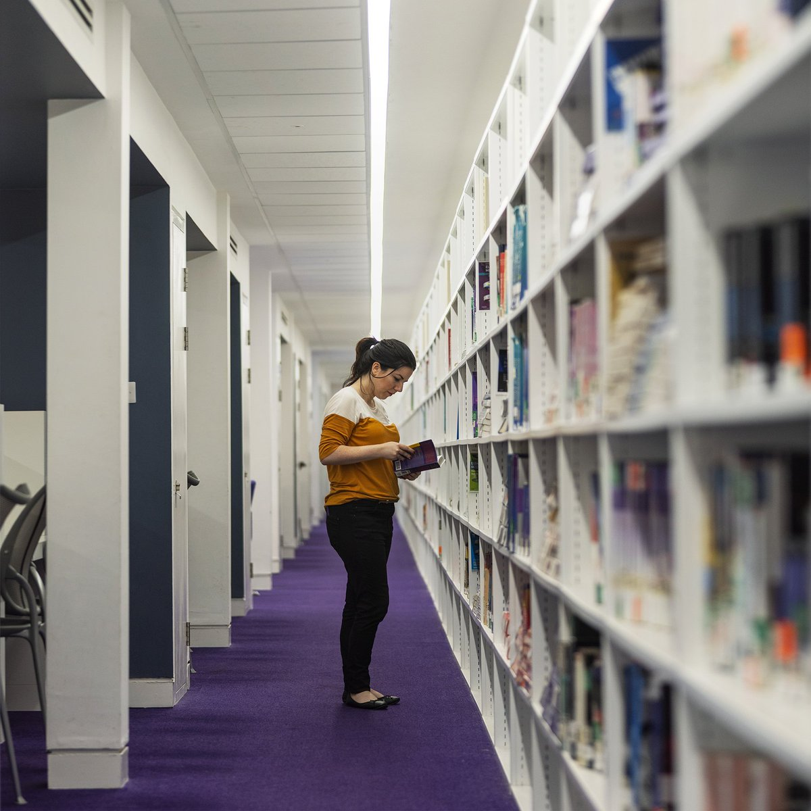

Facilities
The University of Manchester Library is at the heart of the UK's largest university
Research
Visit the N8 Research Partnership website to find research facilities that can take your organisation to the next level.

The University Library
The University of Manchester Library is one of only five national research libraries.

Accomodations
The hotel offers a range of guest rooms and one-bedroom suites and is well connected to local and international transport hubs, including Manchester Piccadilly Train Station and Manchester Airport.